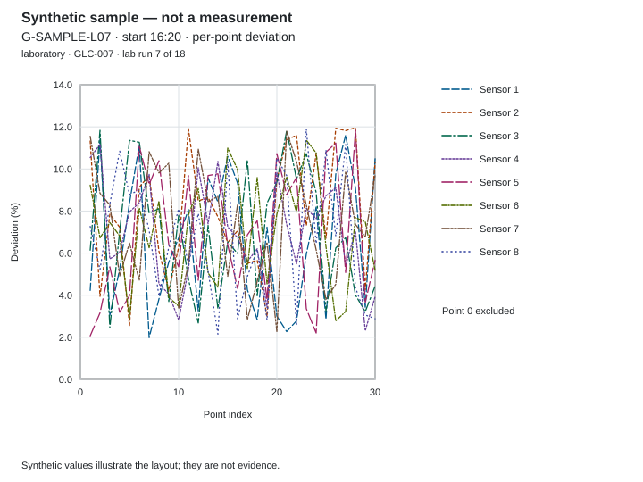
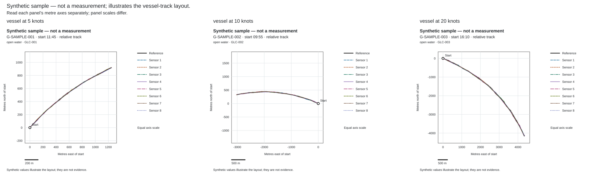

This paper examines how platform motion, sensor mounting and reference sources determine which parts of a positioning task an evaluation represents.
Who this paper is for
Executives deciding whether to license and build a positioning implementation can use the paper to identify relevant movement cases and conditions requiring further assessment. The licensee’s engineering teams can connect sensor hardware, mounting, platform integration and the application to the configuration and movement being assessed. Operators and end users of equipment using position output can identify which stages of travel and stationary work their evaluation needs to represent. Students and researchers can use the definitions and scientific background references to distinguish repeated observations from evidence of repeatability under the same conditions.
Questions covered
- Why must a positioning assessment describe the platform’s motion, mounting and reference source?
- What does a movement-case description establish about the scope of a run?
- What assessment questions do vessels, aircraft, land vehicles and the laboratory loop raise?
- What must remain consistent when repeated laboratory observations are used to examine repeatability?
- How do common definitions and a consistent layout keep each observation connected to its movement case?
- Which operating conditions fall outside these movement cases, and how should changes of environment or reference be assessed?
- How should an organisation connect its chosen installation and movement cases to the application’s acceptance criteria?
Abstract
A positioning evaluation needs to describe how the platform moves as well as where it operates. Speed, the spacing of observations, mounting and the reference source determine what a run represents. NSATS’s own research and development (R&D) demonstration arrangement uses eight sensors to measure Earth’s magnetic field, applies NSATS’s proprietary noise filtering and calculates position without reliance on live GPS satellite signals. Its movement-case register separates vessel, aircraft, land-vehicle and laboratory cases. This paper explains how those cases organise an evaluation and how a reader follows each record from its conditions to its per-point deviation. The table and figures contain synthetic samples, each labelled “synthetic sample — not a measurement”; they illustrate definitions and layouts without supplying results. An organisation considering its own implementation needs to identify the movement cases relevant to its task, the conditions missing from that selection and the independent reference needed to assess them.
Why platform and speed matter
A movement case connects a positioning assessment to the activity of the equipment carrying the sensors. A platform travelling through a setting encounters a sequence of magnetic surroundings. Its structure and operating equipment also contribute to those surroundings. The record therefore identifies the platform and its motion alongside the environment through which it moves.
Speed and sample interval have different roles. Nominal speed describes the movement case; the interval describes the separation in time between recorded points. Together they provide context for the distance moved between observations. The reference positions supply the actual steps used in the assessment. Reading nominal speed as a measurement of every step would lose that distinction, especially where the platform turns or changes its movement.
The platform’s magnetic signature comprises contributions associated with its structure and equipment. Nearby iron objects and electrical currents can affect a magnetic measurement, while geological and external-field contributions also belong to the measured environment. The International Geomagnetic Reference Field (IGRF) describes the main field; its scope does not include every local contribution beside equipment. 1
Vibration, changes in attitude and the sensor mounting belong in the description of motion. Attitude means the orientation of the platform; a change in orientation is distinct from a change in position. Earth’s magnetic field has both strength and direction, and its components refer to defined axes. 2 An assessment needs to distinguish movement of the platform from movement of a sensor relative to its mounting. The movement-case label alone does not describe either in sufficient detail.
Reference sources also depend on the setting. A satellite GPS receiver on the same platform supplies the assessment reference for the vessel, aircraft and land-vehicle entries illustrated here. The laboratory entries use the laboratory’s rail position encoder as the reference. In each case, the reference concerns the same object and observation event as the calculated position. Its uncertainty and conditions of use remain part of the evaluation.
Information used only to assess an output has a different role from an input used to calculate that output. The evaluation description identifies that boundary explicitly. Including a satellite reference in an assessment does not make that reference an operating input to geomagnetic positioning.
Positioning from Earth’s magnetic field · How positioning is evaluated
The movement-case register
NSATS’s register identifies the case, platform, nominal speed, duration, sample interval, point count and reference type. These entries describe the scope and organisation of a run. They do not state how closely the calculated positions agree with the reference or whether an application’s requirements have been met.
Table 1 illustrates that register. The laboratory row groups entries with the same listed conditions; the individual sequence and start times follow in the laboratory section. Point counts include the start point. Units remain attached to nominal speed because the register uses different units for different platforms.
Table 1. Synthetic sample — not a measurement; illustrates the movement-case register.
| Case / run | Platform | Nominal speed (unit shown) | Duration (s) | Sample interval (s) | Points, including start | Reference type |
|---|---|---|---|---|---|---|
| vessel at 5 knots · G-SAMPLE-001 | vessel | 5 knots | 600 | 30 | 21 | satellite GPS receiver on the same platform |
| vessel at 10 knots · G-SAMPLE-002 | vessel | 10 knots | 600 | 30 | 21 | satellite GPS receiver on the same platform |
| vessel at 20 knots · G-SAMPLE-003 | vessel | 20 knots | 600 | 30 | 21 | satellite GPS receiver on the same platform |
| airborne at 100 km/h · G-SAMPLE-004 | aircraft | 100 km/h | 600 | 30 | 21 | satellite GPS receiver on the same platform |
| airborne at 250 km/h · G-SAMPLE-005 | aircraft | 250 km/h | 600 | 30 | 21 | satellite GPS receiver on the same platform |
| land vehicle at 10 km/h · G-SAMPLE-006 | land vehicle | 10 km/h | 600 | 30 | 21 | satellite GPS receiver on the same platform |
| lab run at 1 m/s · G-SAMPLE-L01 … G-SAMPLE-L18 | laboratory | 1 m/s | 60 | 2 | 31 | laboratory rail position encoder |
A reader begins with these conditions before looking at a track or a deviation summary. Duration identifies the extent of the recorded sequence, while the interval and point count describe its sampling. A sampling interval in this register is a recording condition; it does not specify how frequently another implementation supplies position information to its application.
The reference entry identifies the source against which the positions are read. It does not establish the quality of that reference. The assessment description explains how the reference was obtained and paired with the calculated positions, keeping that information connected to the particular run.
What the movement cases are designed to examine
The cases organise questions about step length, platform noise and repeated observations. The speeds are the cases NSATS records, not results. Each case remains attached to its own reference, configuration and setting. Their use in an evaluation depends on recording those conditions, rather than treating a platform name as a complete account of the work.
Vessels
The vessel entries (synthetic sample — not a measurement) represent the nominal speeds 5, 10 and 20 knots. A vessel assessment at a stated speed needs the reference steps, the mounting and the operating state of nearby equipment. The speed label supplies context for movement; the reference track identifies the sequence actually assessed.
Platform noise belongs to the configuration description. The assessor records relevant structure, power equipment and changing electrical activity, together with any change during the run. A deviation at a particular point does not, by itself, identify a magnetic source or explain what caused the difference from the reference. That interpretation requires the associated conditions.
Aircraft
The aircraft entries (synthetic sample — not a measurement) represent 100 and 250 km/h nominal movement. An airborne assessment needs to describe the flight conditions and the relationship between the sensors and the platform. Movement during an inspection and movement between inspection stages may require separate consideration in an organisation’s own evaluation.
Attitude changes and mounting remain relevant even when the intended output is horizontal position. The reference and calculated tracks in this paper use metres north and east of the start point. That presentation does not establish a vertical-position result. If an accompanying record includes elevation, both reference and calculated elevation are expressed relative to the reference elevation at the start; no vertical deviation is derived here.
Land vehicles
The land-vehicle entry (synthetic sample — not a measurement) represents 10 km/h nominal movement in an open-country setting. An evaluation for a vehicle’s task needs to identify its movement, any stops and relevant surrounding activity. An open-country case does not stand in for a route through built structures or for stationary work beside operating equipment.
The receiving application determines which stages matter. Attaching position to an inspection finding requires an association with that observation. Supplying position to an operator display requires the output to relate to the activity being displayed. Those uses shape the organisation’s observation schedule and acceptance criteria without changing the definition of deviation.
The laboratory loop and the per-point view
The laboratory case (synthetic sample — not a measurement) represents movement at 1 m/s on a closed loop. The case organises repeated observations along a defined route, with the laboratory’s rail position encoder supplying the reference positions. A return through the same portion of a loop remains a separate observation event, identified by its position in the sequence.
The following definition applies throughout this paper:
At each point the arrangement calculates a position afresh. Deviation is the horizontal distance between the calculated position and the reference position at that point. As a percentage, it is that distance divided by the distance moved since the previous point, multiplied by 100. The start point has no previous point and is excluded.
Figure 1 illustrates how the per-point view retains the sensor identity and point order. Its horizontal axis is the point index; its vertical axis is percentage deviation. The line styles and labels distinguish the sensors without relying on colour alone. The synthetic sample — not a measurement — supplies no finding about repeated positioning on the loop.

Figure 1. Synthetic sample — not a measurement; illustrates the per-point deviation layout. Run G-SAMPLE-L07.
Text alternative: Eight labelled sensor traces plot synthetic percentage deviation against point index, with the start point excluded. The chart illustrates how individual points remain visible within a laboratory run.
Figure 2 places the vessel track layouts side by side. Each panel retains its own start point, metre axes and scale. The solid reference line and separately labelled dashed sensor lines identify their roles. These synthetic samples — not measurements — illustrate the same reading layout for each case; the panels do not rank the cases or establish a relationship between speed and deviation.

Figure 2. Synthetic sample — not a measurement; illustrates the vessel-track layout. Runs G-SAMPLE-001, G-SAMPLE-002 and G-SAMPLE-003.
Text alternative: Three separate panels show synthetic reference and sensor tracks in metres east and north of each start point, using a solid reference line and eight labelled dashed sensor lines. Each panel has its own scale, gridlines and legend.
The laboratory series
The laboratory sequence is presented as “lab run 1 of 18 … 18 of 18, one per month”, representing repeated assessment opportunities over eighteen months; its presentation below is a synthetic sample — not a measurement, and does not report a completed programme of recorded observations.
Returning to a defined movement case gives an evaluator a basis for examining repeatability. The record still needs to identify the conditions maintained between runs and any changes to the sensor arrangement, mounting, software or surrounding equipment. Reusing a case name does not establish that all of those conditions stayed the same.
The magnetic environment can also change with time. The World Magnetic Model (WMM) describes the main field and its slow change, known as secular variation. 3 This scientific background explains why returning to a setting does not make its field permanently constant. It supplies no explanation for a particular deviation in an NSATS run.
The series uses sequence labels to retain order while withholding calendar dates. Each entry gives a local start time, and points within a run use elapsed seconds. These labels let the reader follow the sequence without disclosing when, on the calendar, the work took place. Start points are identified by location code, with positions expressed relative to them.
Laboratory sequence · synthetic sample — not a measurement. Start times are local.
- lab run 1 of 18 · G-SAMPLE-L01 · start 08:10
- lab run 2 of 18 · G-SAMPLE-L02 · start 10:40
- lab run 3 of 18 · G-SAMPLE-L03 · start 16:00
- lab run 4 of 18 · G-SAMPLE-L04 · start 18:05
- lab run 5 of 18 · G-SAMPLE-L05 · start 16:30
- lab run 6 of 18 · G-SAMPLE-L06 · start 08:50
- lab run 7 of 18 · G-SAMPLE-L07 · start 16:20
- lab run 8 of 18 · G-SAMPLE-L08 · start 13:20
- lab run 9 of 18 · G-SAMPLE-L09 · start 18:50
- lab run 10 of 18 · G-SAMPLE-L10 · start 08:05
- lab run 11 of 18 · G-SAMPLE-L11 · start 12:25
- lab run 12 of 18 · G-SAMPLE-L12 · start 11:20
- lab run 13 of 18 · G-SAMPLE-L13 · start 15:55
- lab run 14 of 18 · G-SAMPLE-L14 · start 10:20
- lab run 15 of 18 · G-SAMPLE-L15 · start 14:45
- lab run 16 of 18 · G-SAMPLE-L16 · start 17:50
- lab run 17 of 18 · G-SAMPLE-L17 · start 11:35
- lab run 18 of 18 · G-SAMPLE-L18 · start 15:35
For technical readers: repeatability concerns agreement among repeated observations under the same conditions. A series extending over time needs its conditions examined before that description is applied. Repeated agreement can coexist with a consistent difference from the reference, so the independent reference remains necessary. The sequence above illustrates the organisation of the record and supports no inference about improvement, deterioration or future behaviour.
Reading different cases with the same definition and layout
The common basis for reading the cases is the same definition and the same layout. Start with the run header, identify the reference and sensor labels, then read the per-point entries and their summary. Keep each observation attached to its case. A shared presentation makes the records readable without turning them into a ranking of platforms; no ratio between one case and another is formed.
A track gives the spatial arrangement of the reference and calculated positions. A per-point deviation chart preserves their sequence of differences. The accompanying table gives the reference step, field magnitude before and after NSATS’s proprietary noise filtering, calculated position and deviation for the identified sensor and point. These views serve different reading tasks within the same record.
Per-sensor summaries retain the minimum, median and maximum deviation. The median identifies the central value in the ordered set; the minimum and maximum identify its endpoints. A reader returns to the individual points to see which observations those summaries describe. A summary alone does not identify the conditions associated with a particular point.
For technical readers: a non-start point with no reference movement keeps its deviation in metres, but its percentage is undefined. It is excluded from percentage summaries and counted among the record’s zero-step points. A stationary run reports metres only. Where path length is included in a run header, it is the sum of reference steps; it is not substituted for the preceding step in the percentage definition.
The Validation results and Geomagnetism demonstration records pages are where recorded runs of NSATS’s own R&D demonstration arrangement appear, each once it has been approved. The synthetic illustrations in this paper show how that material is read; they are not evidence about the arrangement.
Conditions outside these movement cases
The register illustrated here does not cover indoor, underground, urban or stationary cases. Those conditions require their own recorded descriptions and references. Indoor use can involve a surveyed floor plan; an underground or urban task needs a reference suitable for the portion of the task being assessed. A stationary case needs the position record and the surrounding activity even though the reference does not move.
The distinction between movement and setting matters when identifying these omissions. A land vehicle describes a platform. An urban street describes surroundings. Specifying one does not supply the other, and a moving case does not establish what happens while equipment remains at a work point. An organisation’s evaluation should identify the combinations its own application needs.
Transitions also need attention where a task passes between environments. If the reference source changes, the record identifies which source applies to which part of the route. The assessment retains the association between reference and calculated positions throughout, rather than assuming that one reference description covers every stage.
Cases are added as recorded, with each record approved before it appears. A case without recorded data is not published or listed as a case study. The application environments described elsewhere on the site identify intended directions; they do not fill the evidence gaps in this selection.
Underground, on the ground and in the air
Applications and licensed intellectual property
The movement-case selection serves the application’s positioning task. An inspection record, an operator display and another system input can require different associations between movement, observation and position. The organisation developing the implementation defines those associations and the conditions under which it will accept the output.
NSATS licenses its intellectual property: patents, designs and copyrighted software. Where the licensed IP takes the form of software, NSATS supplies it under the licence, with its documentation and updates. Each licensee designs and builds its own solution.
The eight-sensor arrangement described here belongs to NSATS’s own R&D work. It does not specify the sensor hardware or mounting of another implementation. The licensee’s installation guidance records its chosen arrangement, orientation, proximity to ferrous structures and power equipment, processing unit, power supply and software version.
Calibration depends on the chosen sensor. Where its manufacturer provides a procedure, that procedure applies. Recording the calibration and magnetic-environment check connects an evaluation to the configuration actually installed. A change to the sensor, mounting or surrounding structure is recorded as a new configuration.
Geomagnetism IP licensing · Installation and calibration guidance
The executive decision
An organisation’s implementation plan should identify the movement cases that represent its own task and the additional assessments needed for acceptance. The questions below connect that selection to a reviewable record.
- Movement: Which stages involve travel, changes in attitude or stationary work, and how will the observation schedule represent each stage?
- Setting: Which combinations of platform and surroundings matter, and which are absent from the cases discussed here?
- Reference: What independent position record is available for each stage, how will it be paired with the calculated positions, and what uncertainty and conditions apply to it?
- Configuration: How will the sensor mounting, calibration, software and relevant equipment activity be recorded, including changes between runs?
- Repeated assessment: Which conditions should remain fixed, which should be examined separately, and how will each run retain its own identity and reference?
- Acceptance: Who sets the application’s criteria, reviews the per-point evidence and decides whether the implementation meets the intended task?
Scientific background references
These sources explain the magnetic field and its measurement. They provide scientific background, not evidence of NSATS’s performance or a description of its proprietary position calculation.
- Lowes, F. J., for IAGA Working Group V-MOD. IGRF Health Warning, Errors, and Limitations. ncei.noaa.gov/products/international-geomagnetic-reference-field/health-warning.
- Natural Resources Canada. Magnetic components. geomag.nrcan.gc.ca/mag_fld/comp-en.php.
- NOAA National Centers for Environmental Information. World Magnetic Model (WMM). ncei.noaa.gov/products/world-magnetic-model.
Related reading
White papers · Positioning from Earth’s magnetic field · Underground, on the ground and in the air · How positioning is evaluated
Validation results · Geomagnetism demonstration records · Geomagnetism IP licensing · Installation and calibration guidance
Geomagnetic positioning without live satellite signals: what is measured and what is calculated · Evaluating a geomagnetic positioning implementation: reference tracks, deviation and the start-point convention · Magnetic disturbance and noise: what filtering is expected to handle and what it is not · Security considerations for positioning that does not depend on external signals
Related pages: GR-PAPERS — White papers, GT-POS — Positioning from Earth’s magnetic field, GT-ENV — Underground, on the ground and in the air, GR-METHODS — How positioning is evaluated, GR-VALID — Validation results, GR-DEMOS — Geomagnetism demonstration records, GL-HOME — Geomagnetism IP licensing, GI-INSTALL — Installation and calibration guidance, GWP-01 — Geomagnetic positioning without live satellite signals: what is measured and what is calculated, GWP-02 — Evaluating a geomagnetic positioning implementation: reference tracks, deviation and the start-point convention, GWP-04 — Magnetic disturbance and noise: what filtering is expected to handle and what it is not, GWP-05 — Security considerations for positioning that does not depend on external signals